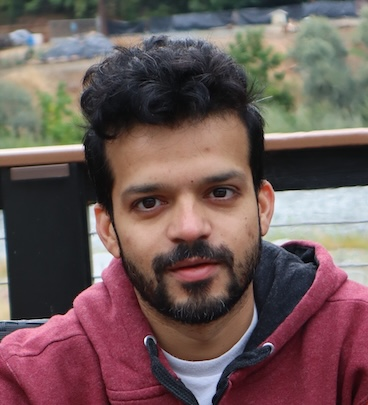
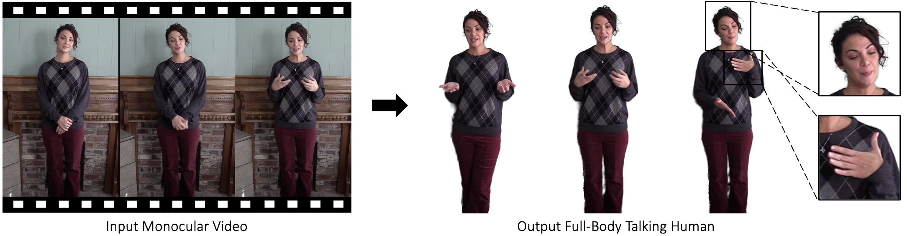

|
Amit Kumar
I'm a research scientist at Meta (previously Facebook), working in the Reality AI, where I my focus lie in human centric computer vision and understanding.
At Meta I've worked on Periocular authentication, 3D generative AI from self portraits, landmark tracking with transformers and realistic AI avatars.
Email /
CV /
Scholar /
Twitter /
Github
|

|
Research
I'm interested in computer vision, deep learning, generative AI, and image processing. Most of my research is about huamn centric computer vision, ranging from 3D generation of avatars to modeling and personalizing behaviors of these avatars. Some publications are listed below.
|
|

|
TalkinNeRF: Animatable Neural Fields for Full-Body Talking Humans
Aggelina Chatziagapi,
Bindita Chaudhury,
Amit Kumar,
Rakesh Ranjan,
Dimitris Samaras,
Nikolaos Sarafianos
arXiv, 2024
/
arXiv
TalkinNeRF is a unified NeRF-based network that represents the holistic 4D human motion. Given a monocular video of a subject, we learn corresponding modules for the body, face, and hands, that are combined together to generate the final result.
|
|
{kind=link}